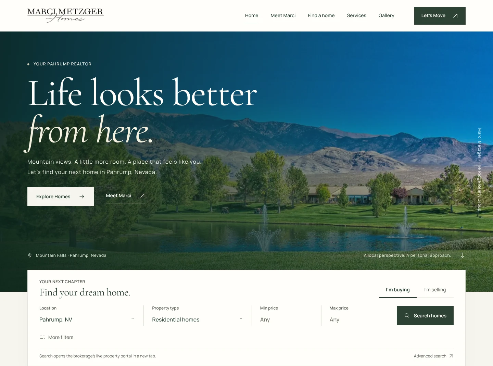
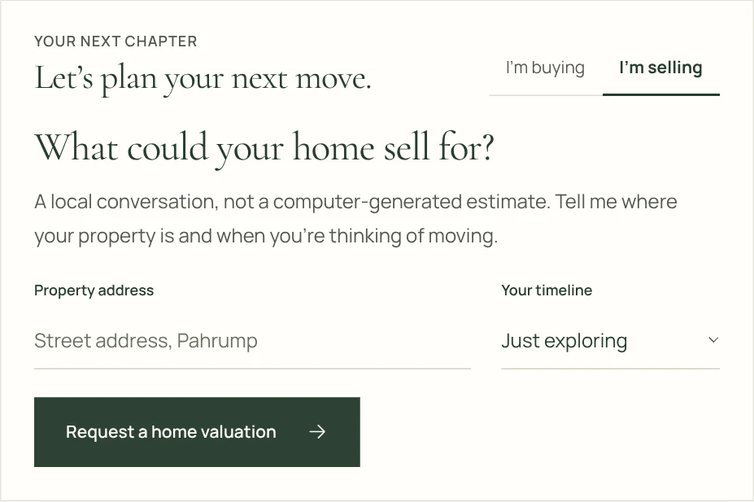

02Real estate
Marci Metzger.
A local perspective on finding a place to call home.
Visit live site (opens in a new tab)
Mountain Falls sets the scene. Just below it, buyers can search by location, property type, and budget.
Open full-size image: Home search

Switching to “I’m selling” replaces the property search with two questions: the home’s address and the owner’s moving timeline.
Open full-size image: Seller enquiry
- Contribution
- Web development
- Format
- Property & lead generation
- Toolkit
- HTML · CSS · JavaScript · Vercel
01 / The approach
Make local knowledge useful.
A potential buyer wants to explore homes; a seller needs a different starting point. Both need to understand who they are working with. The challenge was to make those paths obvious while keeping Marci’s local perspective at the center.
I built a responsive site with distinct buyer and seller paths, featured listings, and accessible contact forms. Property discovery leads into the brokerage portal, while neighborhood information and a personal introduction give visitors context.
02 / Development notes
Inside the build.
-
(01)
Two clear entry points
Buyer and seller options guide visitors toward a property search or a valuation conversation.
-
(02)
Discovery with context
Featured homes, landscape imagery, and neighborhood notes introduce the area alongside the listings.
-
(03)
An approachable next step
Readable forms and clearly placed contact links connect the browsing experience with a real person.